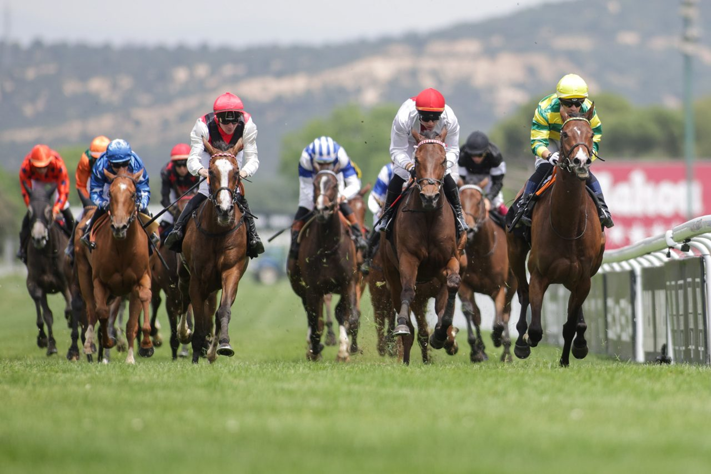

Diez potras disputarán el Gran Premio Beamonte en La Zarzuela
El hipódromo madrileño acogerá una nueva edición del Oaks español sobre 2.400 metros, con un premio total de 45.900 euros repartidos entre los cuatro primeros clasificados.

La Zarzuela se prepara para recibir una de las pruebas más esperadas del calendario hípico español: el Gran Premio Beamonte, que reunirá hasta once potras de tres años en una competición sobre 2.400 metros de distancia. La carrera, considerada el Oaks nacional, repartirá 45.900 euros en premios entre las cuatro primeras clasificadas.
Esta clásica prueba para hembras representa uno de los compromisos más exigentes de la temporada para las jóvenes ejemplares de tres años, que deberán demostrar su madurez y capacidad sobre una distancia que pone a prueba tanto su velocidad como su resistencia. El trazado de La Zarzuela, con sus características particulares, añade un factor adicional de dificultad que los entrenadores han debido considerar en la preparación de sus pupilas.
El hipódromo madrileño mantiene así su tradición de acoger las grandes citas del turf español, confirmándose como escenario privilegiado para las carreras de mayor nivel del país. La expectación es alta entre aficionados y profesionales, que esperan una competición reñida entre las mejores representantes de esta generación.
Con un campo de participantes numeroso, la carrera promete ofrecer un espectáculo de primer nivel y definir a la mejor potra de tres años del momento en la categoría de fondo medio, distancia que históricamente ha servido para identificar a las futuras grandes campeonas del turf nacional.
— Redacción de Galope al Día